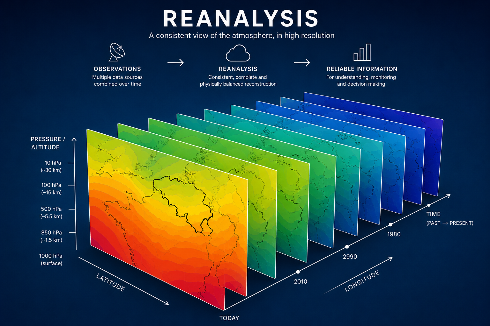
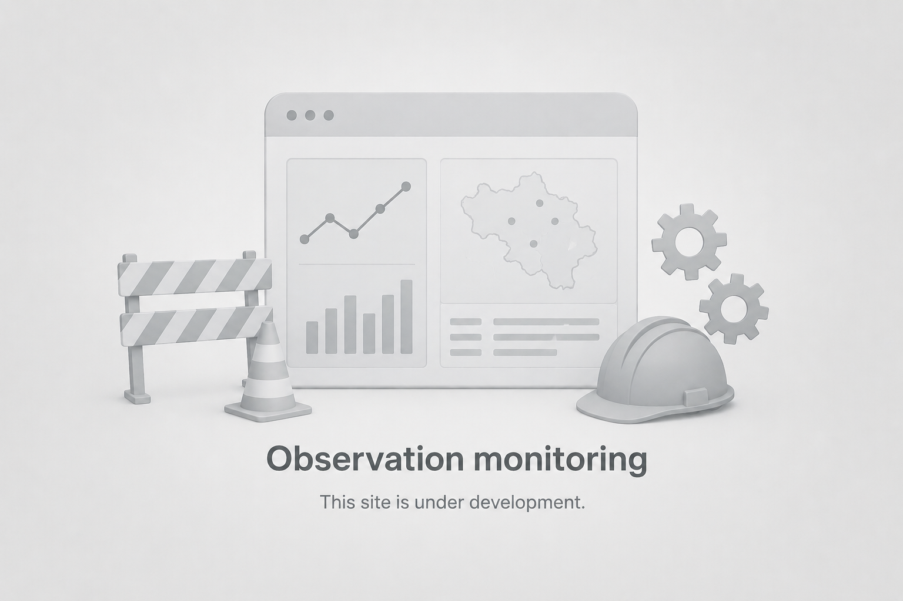

Belgian High resolution ReAnalysis
Explore atmospheric reanalysis fields,
meteorological parameters and temporal evolution.
The pre-operational 3Dvar forecast verification.

Access the daily different monitoring statistics.